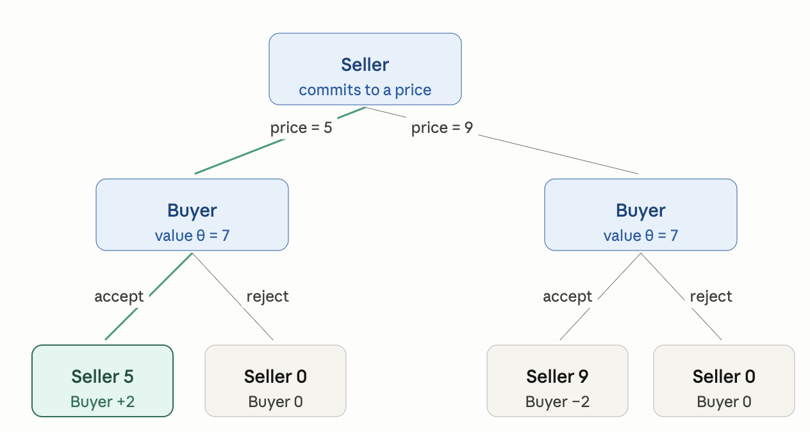
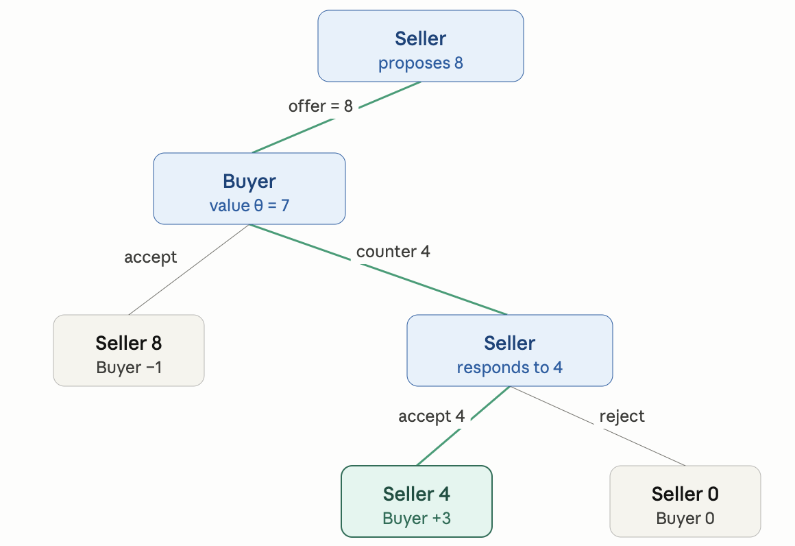
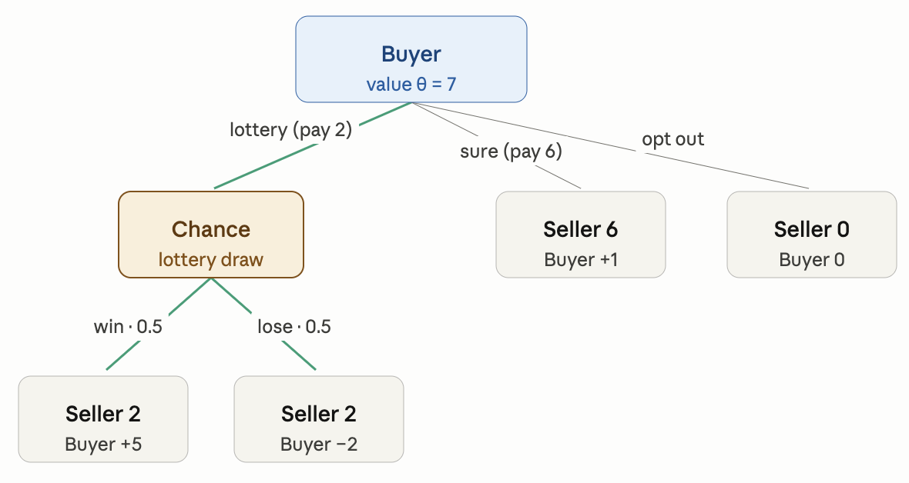
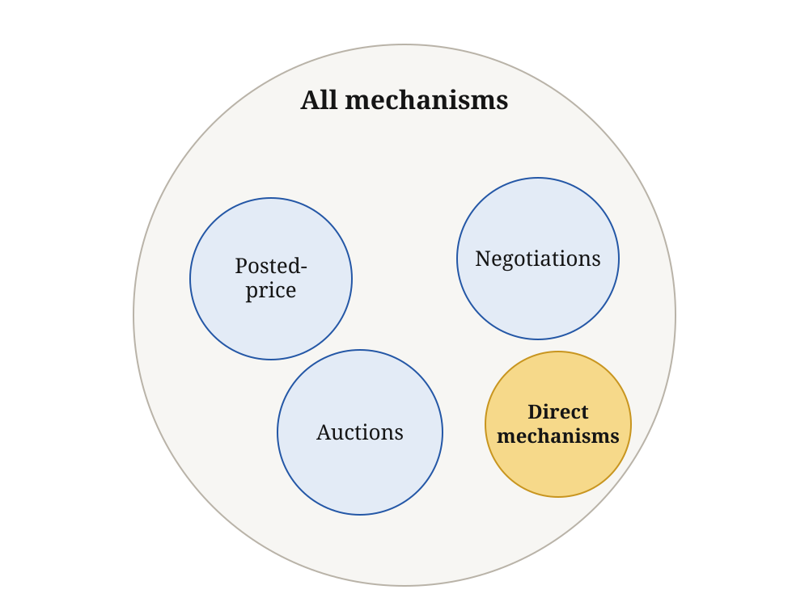
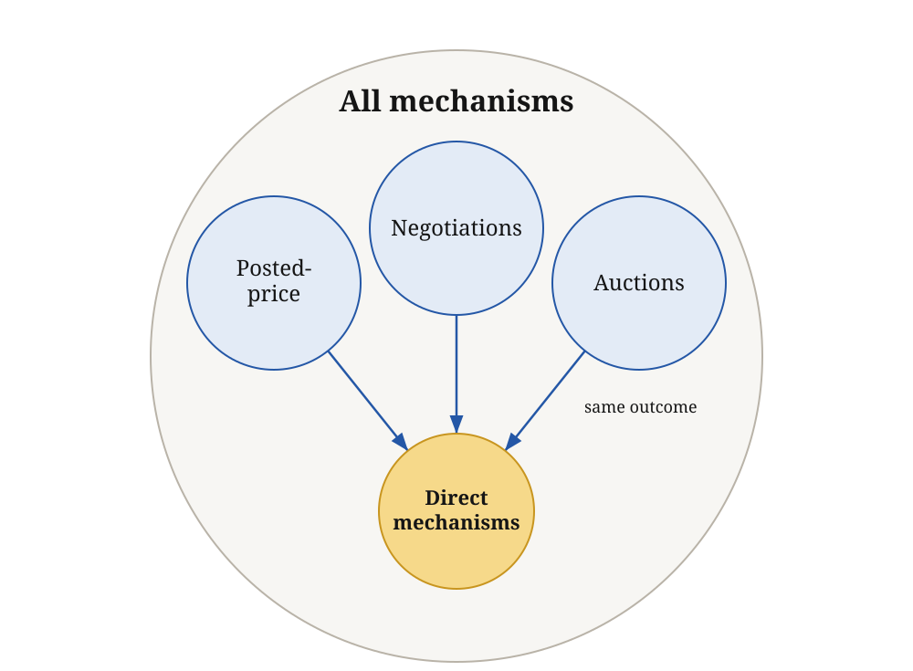
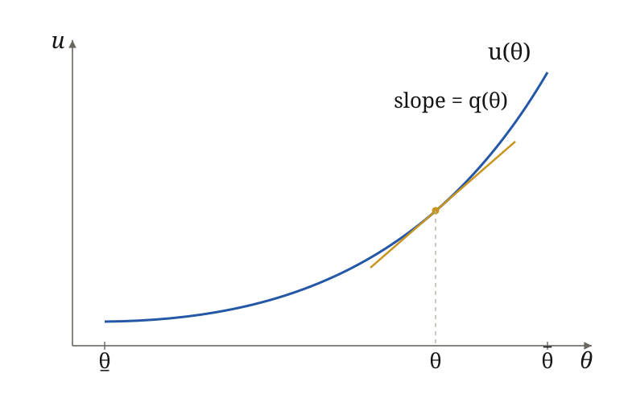

<!doctype html>
<html lang="en">
<head>
  <meta charset="utf-8">
  <meta name="viewport" content="width=device-width, initial-scale=1">
  <title>Day 1 — Mechanism Design</title>
  <link rel="preconnect" href="https://fonts.googleapis.com">
  <link rel="preconnect" href="https://fonts.gstatic.com" crossorigin>
  <link href="https://fonts.googleapis.com/css2?family=EB+Garamond:ital,wght@0,400;0,700;1,400&display=swap" rel="stylesheet">
  <link rel="stylesheet" href="https://cdn.jsdelivr.net/npm/reveal.js@5/dist/reveal.css">
  <link rel="stylesheet" href="../../engine/css/theme.css?v=20260624e">
</head>
<body>
  <div class="reveal">
    <div class="slides"
         data-markdown="slides_day1.md"
         data-asset-base="../../engine/assets/images/"></div>
  </div>

  <script type="text/markdown" id="deck-markdown">
# Introduction to Mechanism Design

Sameer Mehta | ERIM Summer School 2026 | Day 1

## About

### About me

- Associate Professor in Technology and Operations Management (BIM section)
- Ph.D., The University of Texas at Dallas, 2020

Research
- methods: mechanism design, game theory, optimization
- domain: data markets, digital goods, emerging economies
- IS/OM interface

### About you (quickly)
- introduce yourself
- research problem/domain you work on 
- methods you use in your research

### About the course: learning goals

- explain core concepts of mechanism design
- develop and analyze simple models of information asymmetry
- connect mechanism-design theory to applications in economics, operations research, and information systems

### About the course: focus

Various ways to introduce this topic
- applied-econ focused
- theoretical-econ focused
- computer-science focused

^^^

This course
- introduce technical foundation that is necessary
- cover main concepts and results
- focus on intuition and how to use the methods in business research
- domain agnostic, but slight bias towards the topics I know

### About the course: caveats and tips

Caveats
- quantitative, math-y
- introductory, so not exhaustive
- I can make mistakes; flag them
- I may not have answers to all the questions
^^^
Tips
- use pen and notebook
- get your hands dirty; work out the math
- ask questions

### About the course: agenda
- day 1: screening
- day 2: non-linear pricing, auctions
- day 3: public good, Bayesian mechanism design
- day 4: applications, research directions

### About the course: why?
- very useful technique to know
	- econ
	- operations / supply chain
	- information systems

- broad applicability
	- optimization, approximation
	- stylized models
	- policy
			
## Motivation

### Game theory

```tree
game theory | strategic interaction
  non-cooperative games | players act in their own interest
    static games | simultaneous choices
      complete information | types are known -> Nash equilibrium
      incomplete information | types are private -> Bayesian Nash equilibrium
    dynamic games | sequential choices
      perfect information | past actions observable -> subgame perfect Nash equilibrium
      imperfect information | past actions hidden -> perfect Bayesian / sequential equilibrium
  cooperative games | players coordinate as groups
```

### Game theory

- many business problems involve
  - entities making decisions, while anticipating what others will do
- advertisers choosing bids
- employees choosing how much effort to exert
- firms choose prices for their products
- customers choose products
- how will strategic players react? what will they do?

### Private information

- often, in many settings
  - an entity knows something important that others do not
- consumers — willingness to pay; firms do not
- procurement — supplier knows own cost; procurer does not
- employees — knows own effort; employer does not
- hiring — candidate knows own ability; recruiter does not
- games of incomplete information

### Private information

- important to account for private information
  - entities may not reveal that information truthfully
  - they may act in hidden ways
  - the outcome may be quite different
^^^
- games of incomplete information
  - players have private types
  - others form belief about those types
  - actions may signal (reveal, distort) private information
  - outcomes depend on beliefs and incentives

### Game theory vs. mechanism design

|              | game theory | mechanism design |
|--------------|-------------|------------------|
| starts with  | a game: players, actions, information, payoffs, rules | a desired outcome, players' preferences |
| asks         | what will players do? | what rules should we create? |
| does         | predicts equilibrium behavior | designs rules of game to achieve an outcome |
| direction    | rules → outcome | desired outcome → rules |

### Mechanism design

- helps design real-world mechanisms
  - how should items be auctioned?
  - how to allocate budgets? who gets how much?
  - how should suppliers be selected?
  - how should customers be matched to products?
  - how to design platform rules?
^^^
- also helps explain real-world institutions
  - why are valuable art pieces auctioned off instead of a posted price?
  - why are restaurant menus posted prices and not auctions?

### Some distinctions

- contract theory
  - design of incentives for a single agent
  - hidden information (adverse selection)
  - hidden action (moral hazard)
^^^
- mechanism design
  - design of incentives for multiple agents (strategic interaction)
  - typically, it is about hidden information and not hidden actions
^^^
- market design
  - design of markets / platforms
  - goes beyond incentives: matching, pricing, timing, fairness, etc.

## Screening

### Terminology

- principal
  - the one who designs the mechanism
  - typically, uninformed (of private information of the agents)
- agent(s)
  - entities who possess private information
- screening
  - principal-agent problem
  - mechanism used by principal → induce agents to reveal their private information (through self-selection)
  - contrast to signaling

### Screening

- a principal facing a single agent
  - one buyer, one seller
- mechanism design → multi-agent extension
- useful to illustrate the key concepts in mechanism design
- helpful to understand main ideas

### Setup: indivisible good

- a seller who wants to sell an indivisible good
- objective is to maximize revenue from selling that good
- one buyer who values the good at $\theta$ (private information)
  - $\theta$ is also known as the 'type' of the buyer
^^^
- seller knows distribution of $\theta \sim F$
- utility upon purchasing: $\theta - p$
- utility upon not purchasing: $0$
- what price should seller set?

### Two standard assumptions

- quasi-linear (in payment) utility
  - additive separability and linear in payment
  - $f(x,p)$ is quasi-linear in $p$ if it can be written as $f(x,p) = v(x) \pm p$
  - utility from the good doesn't depend on the payment
  - risk-neutral in payment
  - most of classical mechanism design has this assumption
^^^
- information
  - $\theta$ is known to the buyer, not to the seller
  - seller holds a belief / has distributional information
  - $\theta \sim F$ (distribution function), $f > 0$ (density function) on $[\underline{\theta}, \overline{\theta}]$
- what happens if $\theta$ is known to the seller?

### A solution

- to identify mechanisms for selling the good that maximizes seller revenue
- an obvious way
  - pick a price $p$, buyer can have the good only if she pays the price $p$
  - which price $p$ to choose?
- revenue upon setting $p$: $\pi(p) := p \cdot P(\theta \ge p) = p \cdot (1 - F(p))$
- set $p$ that maximizes $\pi(p)$
- monopoly problem from elementary microeconomics with demand $(1 - F(p))$

### Other mechanisms

- is picking a price $p$ the best the seller can do?
- what else could the seller do?
^^^
	- negotiate with the buyer
	- offer a lottery (pay $x$, buyer gets the good with probability $p(x)$)
	-  arbitrary mechanisms (reveal color of shirt; if white, get the good)
	-  other complicated selling procedures
	
^^^
- how do we go about analyzing all these different selling mechanisms?

### Extensive form games

- an extensive-form game represents strategic interaction as a sequence of moves
- it specifies:
  - who moves at each point in the game
  - what actions are available
  - what each player knows when choosing an action
  - where the game ends
  - payoffs at each terminal node

### Extensive form games

Posted price mechanism (pick $p$)



	
### Giving structure to the problem

- assume the seller can commit to
  - an arbitrary extensive-form game (modeling strategic interaction chronologically over time)
    - strategic interactions as a sequence of moves
  - a strategy in that game
^^^
- each terminal node is associated with a probability distribution over $\lbrace 0,1 \rbrace \times \mathbb{R}$
  - probability with which the good is transferred to the buyer (i.e., buyer purchases the good)
  - probability distribution over payments by the buyer

### Giving structure to the problem

Posted price mechanism (pick $p$)


### Giving structure to the problem

Negotiation mechanism



### Giving structure to the problem

Lottery mechanism



### Revised problem

- if the seller can commit to an arbitrary extensive game and strategy in that game
  - which choices maximize her expected revenue?
^^^
- is her expected revenue maximized
  - by committing to a price $p$ and by committing to selling the good at that price whenever the buyer is willing to pay that price?
  - by negotiating with the buyer?
  - by offering a lottery to the buyer?
  - by any other mechanism?

### Can we rule out certain mechanisms?

- a silly mechanism: buyer does not get the object but needs to pay a huge amount
^^^
- the buyer wouldn't want to participate in such a mechanism
  - rule out such mechanisms
^^^
- rule out all mechanisms in which
  - buyer's expected utility-maximizing strategy yields an expected utility strictly less than zero
- this constraint is called 'individual rationality' constraint
  - also, participation constraint

### Have we narrowed down enough?
^^^
- no, we are still looking over a very broad class of mechanisms
- the choice set of all games is enormous
- this is a hard problem!
^^^
- an important result helps tackle this problem
- WLOG, we can restrict attention to a small subset of mechanisms — direct mechanisms

### Direct mechanism

- a direct mechanism consists of functions:
- 'allocation' function $q : [\underline{\theta}, \overline{\theta}] \to [0,1]$
- 'payment' function $p : [\underline{\theta}, \overline{\theta}] \to \mathbb{R}$
^^^
- seller announces the mechanism $(q,p)$: commits to it
- buyer is asked to report her type $\theta$
- seller commits to transferring the good to buyer
  - with probability $q(\theta)$
  - and the buyer needs to pay the seller $p(\theta)$

### Direct mechanism

- payment $p(\theta)$ is deterministic
  - not conditional on the event that the buyer obtains the good
  - makes no difference if we allowed the payment to be random 
  - because the buyer is risk neutral
- mechanisms that are not direct are called indirect mechanisms

### Direct mechanism

- buyer strategy in a direct mechanism
  - need to report their type
^^^
- strategy $\sigma : [\underline{\theta}, \overline{\theta}] \to [\underline{\theta}, \overline{\theta}]$
  - every true type $\theta$, reports her type as $\sigma(\theta)$ to the seller
  - note that $\sigma(\theta)$ may not be equal to $\theta$
  - i.e., the buyer may lie about her type

### The space of mechanisms



### Proposition 1: Revelation principle

> - for every mechanism $\Gamma$ and every optimal buyer strategy $\sigma \in \Gamma$
>   - there is a direct mechanism $\Gamma^{\prime}$ and an optimal buyer strategy $\sigma^{\prime} \in \Gamma^{\prime}$, such that
> - the strategy $\sigma^{\prime}$ satisfies $\sigma^{\prime}(\theta) = \theta$, for every $\theta \in [\underline{\theta}, \overline{\theta}]$
>   - truth-telling is optimal for the buyer
> - the equilibrium outcome under $\Gamma^{\prime}$ is same as that in $\Gamma$
>   - $q(\theta), p(\theta)$ under $\Gamma^{\prime}$ equals the probability of purchase and the expected payment under $\Gamma$

### Proof

- take any indirect mechanism $\Gamma$
  - each type $\theta$ has the best way to play it: $\sigma(\theta)$
  - that play delivers the outcome: $q(\theta), p(\theta)$
^^^
- construct a direct mechanism $\Gamma^{\prime}$ with the rule:
  - report $\theta$, receive the outcome $q(\theta), p(\theta)$
  - the mechanism $\Gamma^{\prime}$ now plays $\sigma$ for the buyer
- why truth telling works
  - if buyer reports $\theta^{\prime}$ in direct mechanism, she receives $q(\theta^{\prime}), p(\theta^{\prime})$
  - but optimal was $q(\theta), p(\theta)$

### Illustrative example

- two types of buyers: low ($\theta = 10$), high ($\theta = 20$)
- indirect mechanism: seller offers two cards
  - Card A: pay 9, yours for sure
  - Card B: pay 3, coin flip (1/2)
^^^

|                      | Card A: pay 9, sure | Card B: pay 3, coin flip (1/2) |
|----------------------|---------------------|--------------------------------|
| Low ($\theta = 10$)  | $10 - 9 = 1$        | $5 - 3 = 2$                    |
| High ($\theta = 20$) | $20 - 9 = 11$       | $10 - 3 = 7$                   |

^^^
- message / strategy space is cards
- optimal strategy $\sigma(\text{low}) = B; \sigma(\text{high}) = A$

### Illustrative example

- direct mechanism: buyer reports a type, then
  - report 'low' → pay 3, receive the good with probability 1/2
  - report 'high' → pay 9, receive the good for sure

|                      | Tell truth     | Lie            |
|----------------------|----------------|----------------|
| Low ($\theta = 10$)  | $5 - 3 = 2$    | $10 - 9 = 1$   |
| High ($\theta = 20$) | $20 - 9 = 11$  | $10 - 3 = 7$   |

^^^
- message / strategy space is $\theta$
- truth-telling is optimal for both types

### Revelation principle

- extremely useful
- helps restrict attention to direct mechanisms, WLOG
- collapses a massive search space of mechanisms into a search over truthful direct mechanism
- we will again come back to this principle later

### Collapsing the space of mechanisms



### Notes on Revelation principle

- if there is no equilibrium in indirect mechanism $\Gamma$
  - no equilibrium to replicate in direct mechanism $\Gamma^{\prime}$
  - revelation principle cannot construct $\Gamma^{\prime}$ from $\Gamma$
  - this does not imply that no direct mechanism exists
^^^
- also, the principle states that truth-telling is an equilibrium
  - may not be unique

## Direct mechanisms

### Analysis of direct mechanisms

- seller announces direct mechanism $(q,p)$
- buyer type: $\theta \in [\underline{\theta}, \overline{\theta}]$
- buyer reports: $\theta^{\prime} \in [\underline{\theta}, \overline{\theta}]$
- receives good with probability $q(\theta^{\prime})$ and pays $p(\theta^{\prime})$
^^^
- utility function of buyer

$$u(\theta^{\prime}; \theta) := \theta \cdot q(\theta^{\prime}) - p(\theta^{\prime})$$

- convenient to define $u(\theta) = u(\theta; \theta)$

### Two important definitions

- a direct mechanism $(q,p)$ is 'incentive-compatible' (IC) if truth-telling is optimal for every type $\theta \in [\underline{\theta}, \overline{\theta}]$
- utility from truthfully reporting type

$$u(\theta; \theta) = \theta \cdot q(\theta) - p(\theta)$$

- utility from lying about the type

$$u(\theta^{\prime}; \theta) = \theta \cdot q(\theta^{\prime}) - p(\theta^{\prime})$$

- incentive compatibility implies

$$u(\theta; \theta) \ge u(\theta^{\prime}; \theta) \quad \forall \theta, \theta^{\prime} \in [\underline{\theta}, \overline{\theta}]$$

### Two important definitions

- a direct mechanism $(q,p)$ is 'individually rational' (IR) if buyers prefer truthful participation to opting out
- individual rationality implies

$$u(\theta; \theta) = \theta \cdot q(\theta) - p(\theta) \ge 0 \quad \forall \theta \in [\underline{\theta}, \overline{\theta}]$$

## Structural results

### Lemma 1: Monotonicity

> if a direct mechanism $(q,p)$ is IC, then $q(\cdot)$ is (weakly) increasing in its argument

^^^

- consider two distinct types $\theta$ and $\theta^{\prime}$, with $\theta > \theta^{\prime}$. Write IC constraints for both types and add them up
- IC($\theta$): $\quad \theta \cdot q(\theta) - p(\theta) \ge \theta \cdot q(\theta^{\prime}) - p(\theta^{\prime})$
- IC($\theta^{\prime}$): $\quad \theta^{\prime} \cdot q(\theta^{\prime}) - p(\theta^{\prime}) \ge \theta^{\prime} \cdot q(\theta) - p(\theta)$

$$\Rightarrow (\theta - \theta^{\prime}) \cdot q(\theta) \ge (\theta - \theta^{\prime}) \cdot q(\theta^{\prime}) \Rightarrow q(\theta) \ge q(\theta^{\prime})$$

- higher types get the good (weakly) more often

### Monotonicity
- a direct mechanism offers a menu
  - each report $\theta^{\prime}$ gives a chance of getting the good, $q(\theta^{\prime})$
  - and payment, $p(\theta^{\prime})$

- a high type values the good more than a low type
  - so the high type is more willing to pay for a higher chance of getting it
  - the low type is less willing to pay for that higher chance

^^^
- so, this creates a sorting order
	- a higher type should be assigned weakly better allocation probability (compared to low type)

### Monotonicity
- if the low type gets a better allocation than the high type
  - making the low-type allocation cheap attracts the high type
  - incentive for high type to report / mimic low type

^^^
  - can price solve the problem?
^^^
    - no: raising the low-type price makes the low type want to avoid its own allocation
    - lowering the high-type price makes the low type want to mimic the high type
    
^^^
- this is why IC rules out downward allocation
  
  	
### Detour before Lemma 2

- we have a well-defined function $f(x, \theta)$
  - $x$: decision variable
  - $\theta$: parameter
^^^
- consider $\max_x f(x,\theta)$ : maximizing $f(x,\theta)$ over $x$
  - let $x^{\ast}(\theta) = \operatorname{argmax}_x f(x,\theta)$ denote the optimal choice
  - let $V(\theta) = f(x^{\ast}(\theta), \theta)$ denote the optimized value
^^^
- we are interested in
  - how does the optimal value of $f$ change with respect to parameter $\theta$
  - that is, $\dfrac{\partial V(\theta)}{\partial \theta}$

### Detour before Lemma 2

$$
\begin{aligned}
\frac{dV(\theta)}{d\theta}
&=
\frac{d}{d\theta} f(\textcolor{#9d1c1c}{x^{\ast}(\theta)},\textcolor{#2457a6}{\theta}) \\[4pt]
&=
\left.\frac{\partial f(x,\theta)}{\partial x}\right|_{x=x^{\ast}(\theta)}
\frac{d \textcolor{#9d1c1c}{x^{\ast}(\theta)}}{d\theta} + \left.\frac{\partial f(x,\theta)}{\partial \textcolor{#2457a6}{\theta}}\right|_{x=x^{\ast}(\theta)}
\end{aligned}
$$

- when $\theta$ changes, the value $V(\theta)$ can change in two ways
  - the optimal choice changes: $\textcolor{#9d1c1c}{x^{\ast}(\theta)}$ may move
  - the objective itself changes: $\theta$ enters $f(x,\textcolor{#2457a6}{\theta})$ directly

^^^

- at an interior optimum, the first term is zero
- so the effect through $x^{\ast}(\theta)$ disappears

$$
\frac{dV(\theta)}{d\theta}
=
\left.\frac{\partial f(x,\theta)}{\partial \textcolor{#2457a6}{\theta}}\right|_{x=x^{\ast}(\theta)}
$$

- this is the Envelope theorem

### Lemma 2: Envelope theorem

> if a direct mechanism is IC, then $u(\theta)$
> - is convex (hence differentiable except at countably many points)
> - satisfies $u^{\prime}(\theta) = q(\theta)$
> - is increasing in $\theta$

^^^
- IC implies
  - reporting the true type is optimal for the buyer

$$u(\theta) = u(\theta; \theta) = \max_{\theta^{\prime} \in [\underline{\theta}, \overline{\theta}]} u(\theta^{\prime}; \theta) = \max_{\theta^{\prime} \in [\underline{\theta}, \overline{\theta}]} \theta \cdot q(\theta^{\prime}) - p(\theta^{\prime})$$

### Lemma 2: Envelope theorem

- what can we say about the function: $u(\theta^{\prime}; \theta) = \theta \cdot q(\theta^{\prime}) - p(\theta^{\prime})$?
  - increasing and affine in $\theta$
^^^
- what can we say about functions that are increasing and affine?
  - they are convex; thus, $u(\theta^{\prime}; \theta)$ is convex in $\theta$
^^^
- what can we say about the maximum of increasing functions?
  - it is increasing; thus, $u(\theta)$ is increasing in $\theta$
^^^
- what can we say about the maximum of convex functions?
  - it is convex; thus, $u(\theta)$ is convex in $\theta$
^^^
- what can we say about differentiability of convex functions?
  - differentiable everywhere except at most countably many points

### Lemma 2: Envelope theorem

$$u(\theta) = \max_{\theta^{\prime} \in [\underline{\theta}, \overline{\theta}]} \theta \cdot q(\theta^{\prime}) - p(\theta^{\prime})$$

- apply the Envelope theorem to obtain $\dfrac{d u(\theta)}{d\theta} = u^{\prime}(\theta) = q(\theta)$
^^^
- the buyer's whole utility curve is built from the allocation rule alone
- payments only shift the curve up or down; they cannot change its shape


### Slope of buyer's utility



### Interpretation

- slope at each type $\rightarrow$ the chance of winning the good
- knowing who gets the good pins down everyone's utility, up to one number $u(\underline{\theta})$
- the upward slope is the information rent: a high type can always imitate a low type, so she must be left at least as well off
- two mechanisms with the same $q$ give the same utilities and the same expected payments, which is revenue equivalence

### Lemma 3: Payoff equivalence

> if a direct mechanism is IC, then for all $\theta \in [\underline{\theta}, \overline{\theta}]$, we have $$u(\theta) = u(\underline{\theta}) + \int_{\underline{\theta}}^{\theta} q(x) dx$$

^^^
- since $u(\cdot)$ is convex, it is absolutely continuous
- this implies that it is the integral of its derivative

### Lemma 4: Revenue equivalence

> if a direct mechanism is IC, then for all $\theta \in [\underline{\theta}, \overline{\theta}]$, we have $$p(\theta) = \theta \cdot q(\theta) - \int_{\underline{\theta}}^{\theta} q(x) dx - \big(\underline{\theta} \cdot q(\underline{\theta}) - p(\underline{\theta})\big)$$

- substitute $u(\theta) = \theta \cdot q(\theta) - p(\theta)$ to get the result

### Revenue equivalence

- Lemma 4 shows that
  - expected payments of different buyer types are pinned by the allocation function $q$ and the expected payment of the lowest type $p(\underline{\theta})$
  - thus, for any given $q, p(\underline{\theta})$, there is only one IC direct mechanism

^^^

- put differently, designing an IC direct mechanism
  - choosing an increasing $q$
  - payments get fixed by fixing $p(\underline{\theta})$
- Lemma 1 and 4 give necessary conditions for a direct mechanism to be IC
  - turns out, these conditions are also sufficient

### Proposition 2: Characterization

>- a direct mechanism $(q,p)$ is IC if and only if
>  - $q$ is increasing
>  - for every $\theta \in [\underline{\theta}, \overline{\theta}]$, we have
> $$p(\theta) = \theta \cdot q(\theta) - \int_{\underline{\theta}}^{\theta} q(x) dx - \big(\underline{\theta} \cdot q(\underline{\theta}) - p(\underline{\theta})\big)$$

### Proposition 2: Characterization
- we have already shown the 'if' part; need to show sufficiency
- we need to show
$$u(\theta)\ge \theta q(\theta')-p(\theta') \iff$$
$$u(\theta)\ge \theta q(\theta')-\textcolor{#2457a6}{\theta' q(\theta') + \theta' q(\theta')} - p(\theta') \iff$$
$$u(\theta)\ge \theta q(\theta')-\theta' q(\theta') + u(\theta') \iff$$
$$u(\theta) - u(\theta') \geq (\theta - \theta') q(\theta') \iff$$
$$\int_{\theta'}^{\theta}q(x)dx \ge \int_{\theta'}^{\theta}q(\theta')dx$$

^^^

- if $\theta>\theta'$, monotonicity gives $q(x)\ge q(\theta')$ on $[\theta',\theta]$, so the integral inequality holds
- if $\theta < \theta'$, reverse the limits to flip the inequality

### Lemma 5: Individual Rationality
- we obtained a complete characterization of IC direct mechanisms
- let's focus on IR now
^^^
> - an IC direct mechanism is IR if and only if $u(\underline{\theta}) \geq 0$
>	- or equivalently $\underline{\theta} \cdot q(\underline{\theta}) \geq p(\underline{\theta})$

^^^
- recall Lemma 2: $u(\cdot)$ is increasing in $\theta$ for IC mechanisms
- thus, for any $\theta \in [\underline{\theta}, \overline{\theta}]$, $u(\theta) \geq 0$ if and only if $u(\underline{\theta}) \geq 0$

### Lemma 6: Revenue-maximizing mechanism
>- if an IC and IR direct mechanism maximizes seller's expected revenue, then
>	- $u(\underline{\theta}) = 0$

^^^
- from Lemma 5, $u(\underline{\theta}) \geq 0$
- if $u(\underline{\theta}) > 0$, that is, if $\underline{\theta} q(\underline{\theta})> p(\underline{\theta})$, then
	- seller can increase revenue from this type by choosing the same $q$, and a higher $p(\underline{\theta})$
- from Proposition 2, all types' payment increases

### Information rent

- from Lemma 6 and Proposition 2, the payment function becomes
$$p(\theta) = \theta \cdot q(\theta) - \int_{\underline{\theta}}^{\theta} q(x) dx$$
- we have written payment function in terms of allocation function
- the term $\int_{\underline{\theta}}^{\theta} q(x) dx$ is called the information rent of buyer of type $\theta$


### Information rent
- re-writing
$$ u(\theta) =  \theta \cdot q(\theta) - p(\theta) = \int_{\underline{\theta}}^{\theta} q(x) dx$$
- information rent: net utility to the buyer 
- payment discount / surplus given to the buyer to incentivize truth-telling
- higher types earn more information rent as they value the same allocation more
- lowest type earns zero rent

## Optimization problem
		
### Revenue maximization

- from Lemma 6 and Proposition 2, the payment function is
$$ p(\theta) = \theta \cdot q(\theta) - \int_{\underline{\theta}}^{\theta} q(x) dx $$
- the seller's objective is expected revenue
$$ \mathbb{E}_{\theta}[p(\theta)] = \int_{\underline{\theta}}^{\overline{\theta}} p(\theta) f(\theta) d\theta $$
- maximize $\mathbb{E}_{\theta}[p(\theta)]$, such that $q$ is increasing

^^^
- the payment is fully determined by $q$
- so the problem reduces to choosing the allocation $q$

### Substituting the payment

- plug $p(\theta) = \theta \cdot q(\theta) - \int_{\underline{\theta}}^{\theta} q(x) dx$ into expected revenue
$$ \mathbb{E}_{\theta}[p(\theta)] = \int_{\underline{\theta}}^{\overline{\theta}} \left[ \theta \cdot q(\theta) - \int_{\underline{\theta}}^{\theta} q(x) dx \right] f(\theta) d\theta $$

^^^
- split into two terms
$$ \mathbb{E}_{\theta}[p(\theta)] = \underbrace{\int_{\underline{\theta}}^{\overline{\theta}} \theta \cdot q(\theta) f(\theta) d\theta}_{\text{value term}} - \underbrace{\int_{\underline{\theta}}^{\overline{\theta}} \left( \int_{\underline{\theta}}^{\theta} q(x) dx \right) f(\theta) d\theta}_{\text{information rent term}} $$

- the second term is a double integral; need to simplify it

### The information rent term

- the double integral
$$ \int_{\underline{\theta}}^{\overline{\theta}} \left( \int_{\underline{\theta}}^{\theta} q(x) dx \right) f(\theta) d\theta $$
- the inner variable $x$ runs from $\underline{\theta}$ up to $\theta$
- the outer variable $\theta$ runs from $\underline{\theta}$ up to $\overline{\theta}$

^^^
- so we integrate over the region
$$ \lbrace (x, \theta) : \underline{\theta} \le x \le \theta \le \overline{\theta} \rbrace $$
- this is a triangle in the $(x, \theta)$ plane
- the idea is to integrate in the other order: first $\theta$, then $x$

### Swapping the order of integration (Fubini's theorem)

- fix $x$ first
$$ \int_{\underline{\theta}}^{\overline{\theta}} \left( \int_{\underline{\theta}}^{\theta} q(x) dx \right) f(\theta) d\theta = \int_{\underline{\theta}}^{\overline{\theta}} q(x) \left( \int_{x}^{\overline{\theta}} f(\theta) d\theta \right) dx $$

^^^
- the inner integral is the probability that the type $\theta$ exceeds $x$
$$ \int_{x}^{\overline{\theta}} f(\theta) d\theta = 1 - F(x) $$
- substitute
$$ = \int_{\underline{\theta}}^{\overline{\theta}} q(x) \big( 1 - F(x) \big) dx $$

### Collecting the two terms

- expected revenue is now a single integral
$$ \mathbb{E}_{\theta}[p(\theta)] = \int_{\underline{\theta}}^{\overline{\theta}} \theta \cdot q(\theta) f(\theta) d\theta - \int_{\underline{\theta}}^{\overline{\theta}} q(\theta) \big( 1 - F(\theta) \big) d\theta $$

^^^
- factor out $q(\theta)$
$$ \mathbb{E}_{\theta}[p(\theta)] = \int_{\underline{\theta}}^{\overline{\theta}} \left[ \theta f(\theta) - \big( 1 - F(\theta) \big) \right] q(\theta) d\theta $$

^^^
- factor the density $f(\theta)$ out of the bracket
$$ \mathbb{E}_{\theta}[p(\theta)] = \int_{\underline{\theta}}^{\overline{\theta}} \left[ \theta - \frac{1 - F(\theta)}{f(\theta)} \right] q(\theta) f(\theta) d\theta $$

### Virtual valuation

- define the virtual valuation of type $\theta$
$$ \psi(\theta) := \theta - \frac{1 - F(\theta)}{f(\theta)} $$

^^^
- expected revenue becomes
$$ \mathbb{E}_{\theta}[p(\theta)] = \int_{\underline{\theta}}^{\overline{\theta}} \psi(\theta) \, q(\theta) \, f(\theta) \, d\theta = \mathbb{E}_{\theta} \big[ \psi(\theta) \, q(\theta) \big] $$

^^^
- expected revenue equals the expected virtual valuation of the buyer, weighted by the chance she gets the good
- the seller no longer chooses payments; she chooses whom to serve

### Virtual valuation

- the virtual valuation has two components
$$ \psi(\theta) = \underbrace{\theta}_{\text{value}} - \underbrace{\frac{1 - F(\theta)}{f(\theta)}}_{\text{rent cost}} $$

^^^
- $\theta$ is the value created by giving the good to this type
- $\dfrac{1 - F(\theta)}{f(\theta)}$ is the cost of serving this type
- so $\psi(\theta)$ is the value of serving type $\theta$ net of the rent 
- it is the marginal revenue from this type

### Maximizing the objective

- the seller chooses $q$ to maximize
$$ \mathbb{E}_{\theta} \big[ \psi(\theta) \, q(\theta) \big] = \int_{\underline{\theta}}^{\overline{\theta}} \psi(\theta) \, q(\theta) \, f(\theta) \, d\theta $$
- subject to $q$ increasing and $q(\theta) \in [0,1]$

^^^
- first ignore the monotonicity constraint
- then the integrand can be maximized type by type (pointwise)
- for each $\theta$, choose $q(\theta) \in [0,1]$ to maximize $\psi(\theta) \, q(\theta)$

### The pointwise solution

- for a fixed $\theta$, the term $\psi(\theta) \, q(\theta)$ is linear in $q(\theta)$
^^^
- if $\psi(\theta) > 0$, set $q(\theta) = 1$
- if $\psi(\theta) < 0$, set $q(\theta) = 0$
^^^
- so the optimal allocation serves a type if and only if its virtual valuation is non-negative
$$ q(\theta) = \mathbf{1}\lbrace \psi(\theta) \ge 0 \rbrace $$
- serve the buyer only when her marginal revenue is positive

### Monotonicity?

- we dropped the requirement that $q$ be increasing
- the pointwise rule $q(\theta) = \mathbf{1}\lbrace \psi(\theta) \ge 0 \rbrace$ need not be increasing in general
^^^
- it is increasing exactly when $\psi$ is increasing
- if $\psi$ is increasing, then $\psi(\theta) \ge 0$ holds on an upper interval of types
- so $q$ is a step from $0$ to $1$, which is increasing
^^^
- we need a condition that guarantees this

### Regular distribution

-  the distribution $F$ is regular if the virtual valuation $\psi(\theta) = \theta - \dfrac{1 - F(\theta)}{f(\theta)}$ is increasing in $\theta$

^^^
- under regularity, the ignored constraint is slack
- the pointwise solution is already increasing
- so the solution to the relaxed problem solves the original problem
^^^
- most common distributions are regular
- uniform, exponential, normal, etc. satisfy this

### Optimal mechanism

- under regularity, $\psi$ crosses zero once
- let $\theta^{\ast}$ be the type with zero virtual valuation
$$ \psi(\theta^{\ast}) = 0 \quad \Longleftrightarrow \quad \theta^{\ast} - \frac{1 - F(\theta^{\ast})}{f(\theta^{\ast})} = 0 $$

^^^
- the optimal allocation is a threshold
$$ q(\theta) = \mathbf{1}\lbrace \theta \ge \theta^{\ast} \rbrace $$
- the buyer gets the good when her value clears the threshold

### Optimal mechanism

- recall the payment formula and the optimal allocation
$$ p(\theta) = \theta \cdot q(\theta) - \int_{\underline{\theta}}^{\theta} q(x) dx, \qquad q(\theta) = \mathbf{1}\lbrace \theta \ge \theta^{\ast} \rbrace $$

^^^
- for a type below the threshold, $\theta < \theta^{\ast}$, the allocation is zero on all of $[\underline{\theta}, \theta]$
$$ p(\theta) = \theta \cdot 0 - \int_{\underline{\theta}}^{\theta} 0 \, dx = 0 $$

^^^
- for a type above the threshold, $\theta \ge \theta^{\ast}$, the allocation is zero below $\theta^{\ast}$ and one above
$$ p(\theta) = \theta \cdot 1 - \int_{\theta^{\ast}}^{\theta} 1 \, dx = \theta - (\theta - \theta^{\ast}) = \theta^{\ast} $$

^^^
- the buyer pays $\theta^{\ast}$ when she buys, and nothing otherwise
- this is a posted price at $p = \theta^{\ast}$

### Back to the monopoly price

- rearrange the zero-virtual-valuation condition
$$ \theta^{\ast} f(\theta^{\ast}) = 1 - F(\theta^{\ast}) $$

^^^
- this is the first-order condition of the monopoly problem
$$ \max_{p} \; p \big( 1 - F(p) \big) $$
- differentiate $p(1 - F(p))$ and set it to zero: $(1 - F(p)) - p f(p) = 0$

^^^
- the formal route gives us the same posted price 
- the search over all mechanisms confirms that a single price is optimal


###  What about irregular distributions?

- if $\psi$ is not increasing, the pointwise rule can fail monotonicity
- the fix is to replace $\psi$ with its 'ironed version'
- this flattens $\psi$ over the regions where it decreases
- the optimal $q$ is then constant on those regions

^^^
- the idea is the same: serve types with non-negative ironed virtual valuation
- we will not pursue the details here

## Exercise

### Developing a research question
- we started with a basic model of information asymmetry
- got exposed to the machinery
- come up with a problem from your own research domain
- not to solve it today; but frame it, so that the techniques become usable later

### Building blocks
- principal: the entity who designs the rules
- agent(s): the entities who hold private information
- type: the private information itself
- allocation rule: what each reported type receives
- payment rule: what each reported type pays or is paid
- constraints: incentive compatibility, individual rationality, and context-specific ones
- objective: what the principal maximizes

### Template: the players

- domain or setting:
- who is the principal, and what do they control?
- who are the agents?
- how many agents, and on which side?
  - one or many buyers
  - one or many sellers
  - consumers, firms, government, platform, intermediary
- who is informed, and who is uninformed?

### Template: the private information

- what exactly is privately known?
- is the type single-dimensional or multi-dimensional?
  - single: one number, such as willingness to pay or cost
  - multi: several attributes, such as value and capacity, or quality and deadline
- type space: continuous / discrete?
- could the private information be hidden action rather than hidden type?

### Template: allocation and payment

- what is the good or decision being allocated?
- what does the allocation mean here?
  - a probability, a quantity, a quality level, an access right, a priority
- what does the payment mean here?
  - a price, a fee, a subsidy, a wage
- are payments allowed at all, or is the setting money-free?
- is utility quasi-linear, and are the entities risk-neutral?

### Template: the constraints

- IC, IR
- any context-specific constraints, such as:
  - capacity or supply limits
  - budget limits on one side
  - fairness, equity, or non-discrimination rules
  - legal or regulatory limits
  - timing, deadlines, or dynamics over multiple periods

### Template: the objective and the benchmark

- what does the principal maximize/minimize?
  - revenue, profit, welfare, efficiency, cost, access
- what is the full-information benchmark?
  - what would the principal do if private information were observable?
  </script>

  <script defer src="https://cdn.jsdelivr.net/npm/reveal.js@5/dist/reveal.js"></script>
  <script defer src="https://cdn.jsdelivr.net/npm/reveal.js@5/plugin/notes/notes.js"></script>
  <script defer src="https://cdn.jsdelivr.net/npm/marked@12/marked.min.js"></script>
  <script defer src="https://cdn.jsdelivr.net/npm/mermaid@10/dist/mermaid.min.js"></script>
  <script defer src="https://cdn.jsdelivr.net/npm/viz.js@2.1.2/viz.js"></script>
  <script defer src="https://cdn.jsdelivr.net/npm/viz.js@2.1.2/full.render.js"></script>
  <script defer src="../../engine/js/render.js?v=20260624e"></script>
</body>
</html>
